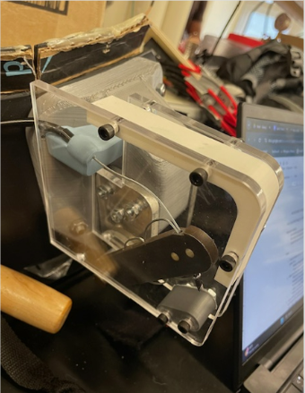

Wearable Exoskeleton for Gait Stabilization
Rowan University · PI: Dr. Mitja Trkov · Aug 2024 – May 2025 · Published IFAC 2025
After my first research project taught me how robots move in configuration space, the next step was asking a harder question: what happens when the robot has to move with a human? This project took me from surgical robot algorithms to a wearable device designed to prevent falls during gait perturbations — slips, trips, and stumbles that injure millions of people every year. It ended in a publication. Here's how it went.
The Problem
Why Gait Perturbations Matter
Falls are the leading cause of injury-related emergency room visits in the United States. For elderly adults and people with mobility impairments, a single slip can be catastrophic — hip fractures, head injuries, loss of independence. The human body handles most perturbations automatically through rapid neuromuscular reflexes, but those reflexes slow down with age, injury, or neurological conditions.
The core question: Can a wearable exoskeleton detect gait perturbations early enough — and respond fast enough — to stabilize the wearer before they fall?
Design challenge: The device must be fast (react in <200ms), lightweight (user must walk naturally), comfortable (wearable for extended periods), and safe (mechanical failure must not cause injury). These constraints are fundamentally harder than designing a stationary surgical robot.
Why Wearables Are Hard
When you design a robot for a surgical theater, you control the environment. When you design something a person wears, everything changes: body variability, comfort, heat, fatigue, sensor placement drift, real-world noise. This project pushed me to think like a systems engineer — not just about the algorithm, but about the entire human-device interaction.
Approach: Problem → Design → Simulation → Validation
Phase 1 · Design
Mechanical architecture, sensor selection, fabrication. SolidWorks CAD, laser cutting, 3D printing, iterative prototyping.
Phase 2 · Sensing
IMU placement, FSR (Force Sensitive Resistor) instrumentation on the thigh brace. Real-time gait phase detection from sensor fusion.
Phase 3 · OpenSim Validation
Biomechanical simulation to model gait perturbations. Validate that the control strategy produces the correct joint torques and forces.
Phase 4 · Testing & Compliance
Human testing, ergonomics questionnaires, iterative risk analysis to ISO/ASTM standards. Safety-first iteration cycle.
Device Design
Mechanical Architecture
The exoskeleton targets the hip joint — a primary contributor to gait stability. The device wraps around the user's waist and thigh, with an actuator providing assistive torque at the hip during perturbation events. Key design decisions:
- Hip-mounted actuation: Leverages the largest moment arm for maximum stabilization effect
- Modular frame: Adjustable to fit different body sizes; fabricated from lightweight aluminum and 3D-printed ABS
- Sensor integration: IMUs on the thigh and shank, FSRs on the thigh brace for ground contact estimation
- Safety limits: Hard mechanical stops prevent the actuator from moving beyond safe ROM (range of motion)
.png)
.png)
Fabrication Process
I used SolidWorks for all CAD work, then fabricated with workshop tools: laser cutting for flat brackets, 3D printing for custom sensor housings and attachment points, and a drill press for assembly. Iterative benchtop testing after each prototype cycle — we built three versions over the project duration.
Risk Analysis & Compliance
Medical devices must be safe. I led iterative risk assessments per ISO 14971: listing potential failure modes, scoring severity and likelihood, then redesigning to reduce risk. We also applied ASTM standards for structural testing and referenced published predicate devices to inform our test procedures.


OpenSim Biomechanical Simulation
Why Simulate First?
Before testing on humans, we validated our control strategy in OpenSim — a musculoskeletal simulation environment developed at Stanford. This let us model the exoskeleton's interaction with a full body model, apply simulated perturbations (slips, trips), and verify that the device would produce the right stabilizing forces and torques.
What We Simulated
- Normal gait cycle at multiple walking speeds
- Hip abduction and hip flexion perturbations during swing phase
- Assistive torque profiles from the exoskeleton actuator
- Ground reaction forces and joint loading with and without device

Key Findings
Simulation showed that hip-level intervention during the early swing phase was most effective at preventing perturbation-induced falls. The assistive torque window is narrow — about 100–200ms — which set the real-time requirements for our control algorithm.
Results & Human Testing
Prototype Performance
We developed a working prototype that demonstrated proof-of-concept for wearable gait stabilization:
- Device worn comfortably for 30+ minutes during bench testing
- IMU-based perturbation detection triggered within 150ms of perturbation onset
- Assistive torque profile matched OpenSim-validated targets
- All structural elements passed benchtop load testing to specified safety margins


Limitations & Next Steps
Human leg actuation was limited in the prototype due to actuator constraints — the device showed perturbation detection and control signal generation, but full assistive force delivery is the target of the next iteration. The design lays strong groundwork for future hardware upgrades.
Publication: IFAC PapersOnLine 2025
The FSR-instrumented thigh brace developed in this project was published in IFAC PapersOnLine 2025 — the proceedings of the International Federation of Automatic Control. The paper focuses on using FSR sensors to classify gait phase and detect perturbations in real time.
Title: "FSR-Instrumented Wearable Thigh Brace for Gait Phase Detection and Perturbation Analysis"
Venue: IFAC PapersOnLine, 2025
Outcome: Validated sensor configuration for reliable gait phase classification across multiple subjects
This was my first published paper. The process of reducing months of research into a clear, concise, peer-reviewed contribution taught me what it means to communicate engineering work at a professional level. View the publication →
What This Taught Me
Every engineering constraint I'd previously worked around in a lab — temperature, wear, body variability, real-time latency — became a first-class design problem here. You can't just optimize the algorithm; you have to optimize the whole system, including the human wearing it.
I came out of this project with a much richer understanding of: systems integration (hardware + software + human), iterative design (prototype, test, revise), regulatory thinking (ISO standards aren't bureaucracy — they're how you avoid hurting people), and scientific communication (published work means the world gets to use what you built).